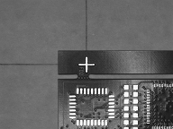
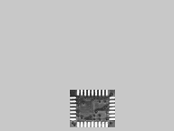
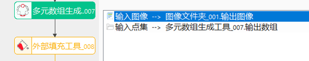
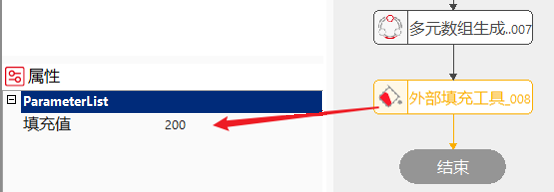
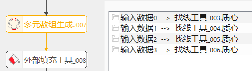
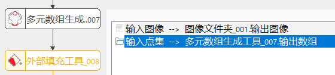
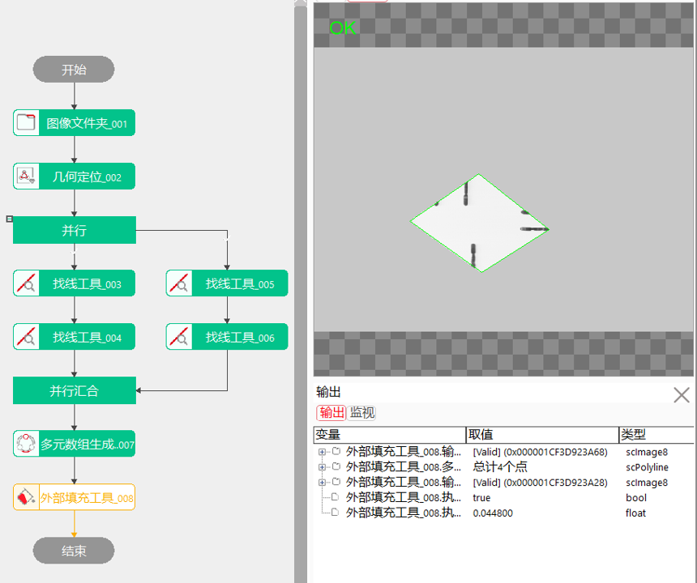

外部填充是图像预处理方法之一，可以将输入图像指定多边形外部填充为特定灰度值，以实现对不感兴趣区域进行屏蔽。
当需要对输入图像感兴趣的区域做提取时，会用到外部填充工具。如图。
 
外部填充的过程是新建一幅和原图相同大小的图像，然后全部设置为指定的填充像素值。然后将原图上的指定区域截取出来，拷贝到新建的背景图像上，即生成了输出图像。





| 现象描述 | 解决方法 |
|---|---|
| 错误栏输出图像数据为空 | 检查数据链是否链入图像，以及图像数据是否正常 |
| 错误栏输出点数至少为3 | 检查输入点集是否链入，同时检查链入的点击个数是否大于等于3 |
| 参数名称 | 参数说明 |
|---|---|
| 输入图像 | 工具的输入图像，在此基础上进行填充，由数据链链入。 |
| 填充值 | 外部填充的灰度值。 |
| 参数名称 | 参数说明 |
|---|---|
| 输入图像 | 工具的输入图像尺寸，供后续数据链使用。 |
| 多边形ROI | 外部填充的多边形ROI点集。 |
| 输出图像 | 进行外部填充后的结果图像。 |
| 执行结果 | 工具执行结果。 |
| 执行时间 | 工具执行时间。 |
参见“\Samples\外部填充工具.gvp”。